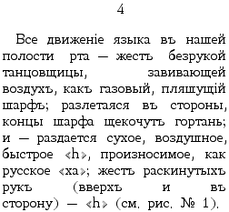
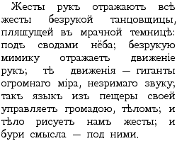
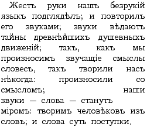
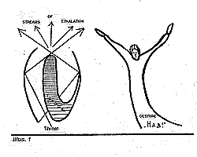
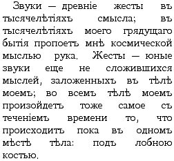
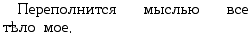

Glossolalia (Section 4)

All motion of the tongue in the cavity of our mouth is -- a gesture of an armless dancer, twirling the air, like a gaseous, dancing veil; as they fly off to the sides, the tips of the veil tickle the larynx; and -- out comes a dry, aery, quick "h," pronounced like the Russian "kh"; the gesture of arms extended (upwards and to the side) is -- "h" (see illus. #1).

The gestures of the arms reflect all of the gestures of the armless dancer, dancing in a murky dungeon: beneath the arches of the palate; the movement of the arms reflects an armless mimicry; these movements are -- giants of an enormous world, invisible to sound; in this way the tongue directs its bulk, the body, from out of its cave; and the body draws for us gestures; and the storms of meaning are -- beneath them.

Our armless tongue observed the gesture of the arm; and duplicated it in sounds; sounds know the mysteries of ancient movements of our spirits; just as we pronounce the sounding meanings of words, so too were we once created; pronounced with meaning; our sounds -- words -- will become the world: we create people out of words; and the words are acts.


Sounds are -- ancient gestures in the millennia of meaning; in the millennia of my coming being an arm will sing to me with cosmic meaning. Gestures are -- youthful sounds of meanings implanted in my body, but not yet composed; the same thing that is occurring for the time being in a single place of the body, under the skullbone, will with the flow of time occur throughout my entire body

My entire body will brim full of meaning.